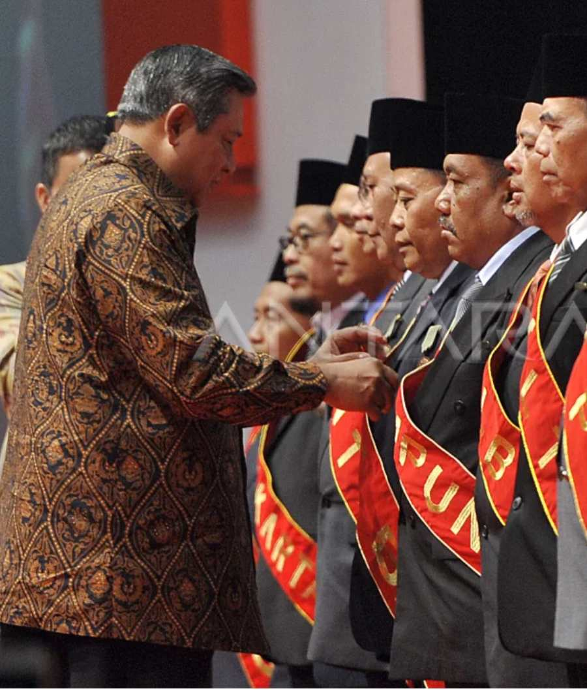
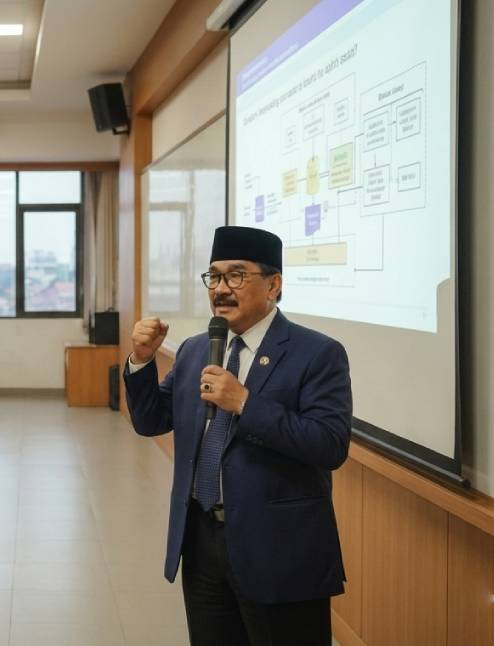
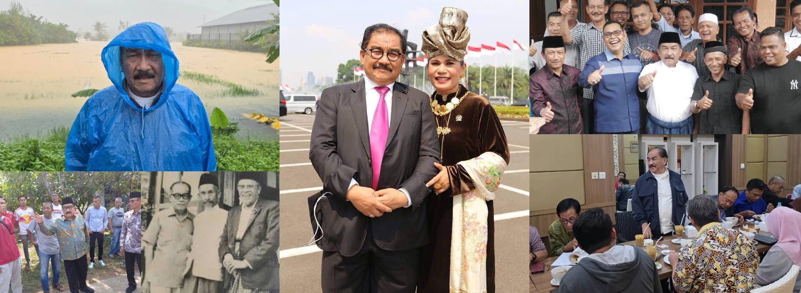

Gerak Bareng, Bikin Perubahan
Selamat datang di website resmi Muhammad Shadiq Pasadigoe, media komunikasi publik untuk silaturrahmi, belajar, dan berkembang bersama.

Penghargaan
“Hidup bukanlah semata-mata untuk diri sendiri, melainkan untuk memberi manfaat bagi orang lain.” — Buya Hamka

Satyalancana Kebaktian Sosial 2013
Tanda kehormatan yang diberikan oleh Pemerintah Republik Indonesia kepada seseorang yang telah berjasa besar dalam bidang perikemanusiaan dan bidang kesejahteraan sosial.
Explore pageBupati Berprestasi 2008
Bupati Berprestasi versi Majalah SWA pada tahun 2008 karena berhasil dalam memajukan daerah, termasuk komitmen pada pemberdayaan masyarakat dan penanggulangan kemiskinan.
Explore pageBhakti Koperasi dan Usaha Kecil dan Menengah
Diberikan oleh Pemerintah Republik Indonesia pada tahun 2007 sebagai apresiasi atas jasa dan dedikasi dalam pengembangan koperasi dan UKM di wilayah Kabupaten Tanah Datar.
Explore page
Catatan Akademik
- Fakultas Peternakan Universitas Andalas 1986
- Fakultas Hukum Universitas Eka Sakti 2000
- Magister Manajemen Universitas Negeri Padang 2011
Karir
- Bupati Tanah Datar 2005 - 2015
- Kementerian Pendayagunaan Aparatur Negara dan Reformasi Birokrasi 2017
- Dewan Perwakilan Rakyat Republik Indonesia periode 2024–2029
Kata Mereka Tentang Shadiq

Trivia: Hal Unik Mengenai Shadiq Pasadigoe
Ayah Shadiq Pasadigoe ternyata seorang pejuang perlawanan kolonial Belanda asal Nagari Rao-rao, pernah dibuang pemerintah kolonial Belanda ke Digoel, Pulau Papua pada tahun 1932. Nama Pasadigoe sendiri rupanya adalah akronim dari nama ayahnya, Pakiah Saliah Digoel.
Shadiq menikah dengan Betti Zulfina, mantan anggota DPR RI periode 2014–2019 dari Partai Golkar. Dari pernikahan ini, mereka dikaruniai lima orang anak. Picer Nikander Muhammad, Nabila Mira Miranda (wafat pada 2021 di usia 24 tahun), Nadiah Firzana Muti, Naura Ghassani Muti, dan Nausilla Hasanah Muti.
Shadiq’s Views